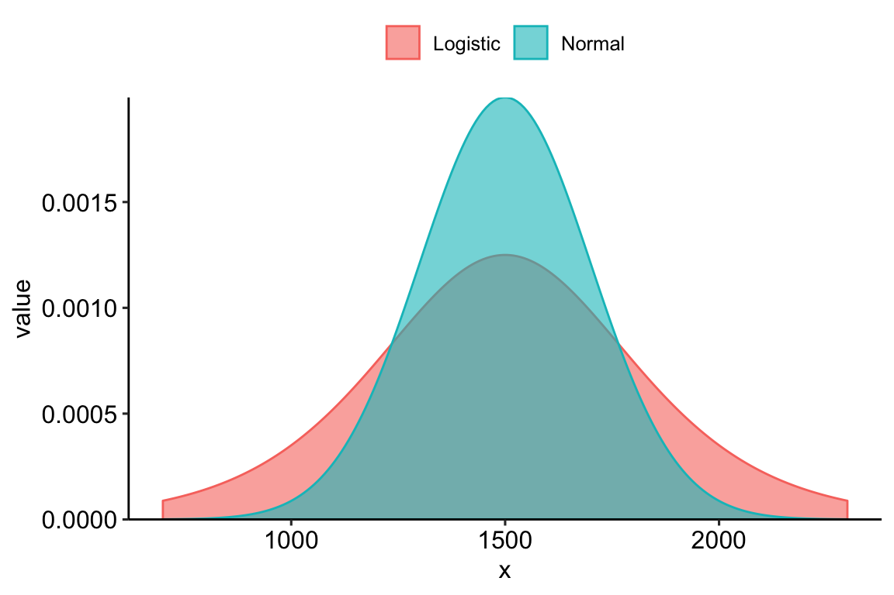
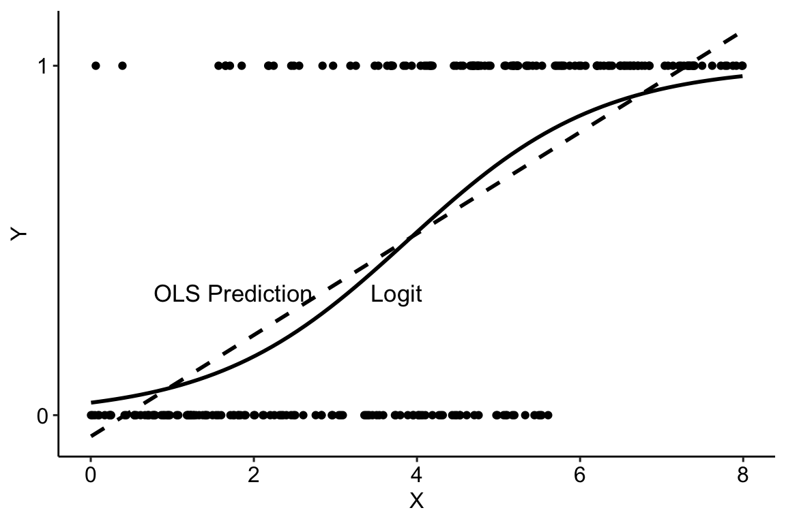
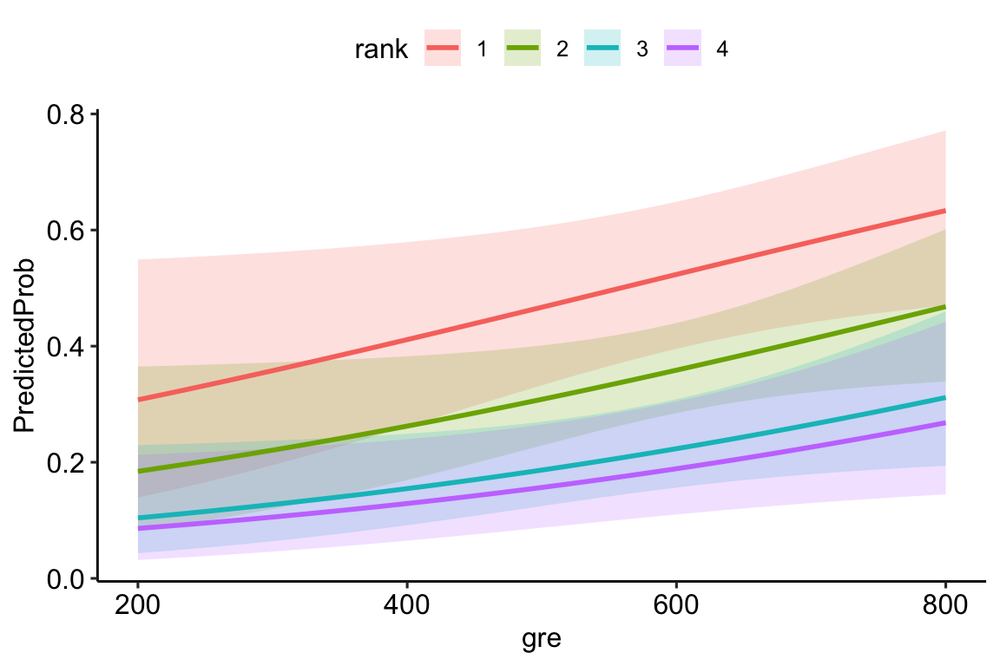

| admit | gre | gpa | rank |
|---|---|---|---|
| 0 | 380 | 3.61 | 3 |
| 1 | 660 | 3.67 | 3 |
| 1 | 800 | 4.00 | 1 |
| 1 | 640 | 3.19 | 4 |
| 0 | 520 | 2.93 | 4 |
| 1 | 760 | 3.00 | 2 |
MGMT 30500: Business Statistics
Logistic Regression
Professor
Davi Moreira
Davi Moreira
Overview
- Logistic Regression Model.
Motivation
Motivation
- What is the probability of success of a candidate based on the data below?
gre: Graduate Record Exam scoresgpa: Grade Point Averagerank: prestige of undergraduate institutionadmit: admission to graduate school
Review of Linear Estimation
\(Y = \beta_{0} + \beta_{1}X + \beta_{2}Z + \epsilon\)
We could transform or add variables to achieve model linearity:
- Taking logarithms of Y and/or X’s;
- Adding quadratic terms;
- Adding interactions.
- Then we run our estimation, check model quality, visualize results, etc.
Review of Linear Estimation
\(Y = \beta_{0} + \beta_{1}X + \beta_{2}Z + \epsilon\)
In all linear models we have covered, the dependent variable (\(Y\)) was numerical/continuous.
What do we do when it is not numerical/continuous?
General Linear Model
General Linear Model
Models in which the parameters \((\beta_0, \beta_1, \ldots, \beta_p)\) all have exponents of one are called linear models.
A general linear model involving \(p\) independent variables (\(z_i\)’s) is:
\[ y = \beta_0 + \beta_1 z_1 + \beta_2 z_2 + \ldots + \beta_p z_p + \epsilon \]
where each independent variable \(z_i\) is a (linear or nonlinear) function of \(x_1, x_2, \ldots, x_k\) (the variables for which data have been collected).
- Here, \(y\) can be a function of the original response variable as well.
General Linear Model
The General Linear Model can be used to relates the dependent variable \(Y\) to the systematic part of the model (linear predictors) through a link function.
- From:
- To:
\(P_{i} = P (Y = 1) = \Lambda(\beta_{0} + \beta_{1}X_{1i} + \beta_{2}Z_{2i} + \epsilon) = \Lambda(XB + \epsilon)\),
where \(\Lambda\) (lambda) represents the link function that strictly assumes values between 0 and 1.
Binary Dependent Variable
Therefore, the predicted probabilities of a binary dependent variable model can be given by:
\(\hat{P}_{i} = \hat{P} (Y = 1) = \Lambda (\hat{\beta}_{0} + \hat{\beta}_{1}X_{1i} + \hat{\beta}_{2}Z_{2i}) = \Lambda(\hat{X}_{i}B)\) ,
where \(\Lambda(\hat{X}_{i}B)\) is the systematic (linear) component of the model.
Understanding the Link Function
Understanding the Link Function

Understanding the Link Function
We need to transform \(Y\) (dichotomous) into a continuous variable \(Y'\) (\(-\infty\), \(\infty\));
To do this, we need a link function that performs this transformation.
Solution:

Understanding the Link Function
Let’s remember the log-level model transformation:
\[ \log(\hat{Y}_{i}) = \beta_{0} + \beta X \]
- A variation of one unit in \(X_i\) implies a \(\beta\%\) variation in \(Y_i\);
- The link function is: \(F(Y) = \log(Y)\);
The Role of the Link Function

- The logistic function transforms the linear prediction \(\beta_0 + \beta X\) into a probability that \(Y = 1\), denoted as \(\Pr(Y = 1|X)\).
- This function is sigmoidal (S-shaped), which is why the probability smoothly transitions between 0 and 1.
- The line \(E(y^*|X)\) represents the expected value of the latent variable for a given value of \(X\).
\[ Y = \begin{cases} 1 & \quad \text{if } y^{*}_{i} > 0 \\ 0 & \quad \text{if } y^{*}_{i} \leq 0 \end{cases} \]
- \(y^{*}\): is a latent (unobserved) variable, which represents an underlying continuous measure that influences the binary outcome. It drives the observed binary outcome \(Y\).
\[ y^{*}_{i} = \beta_{0} + \beta X + \epsilon \]
The binary variable \(Y\) is determined by a threshold applied to the latent variable \(y^{*}\).
The plot illustrates the role of the logistic function in converting the continuous latent variable into probabilities that \(Y = 1\) or \(Y = 0\). As \(X\) increases past a certain threshold (denoted \(\tau = 0\) on the graph), the probability that \(Y = 1\) rises above 0.5, indicating a higher likelihood of observing \(Y = 1\).
In summary: The logistic model maps a linear predictor (\(\beta_0 + \beta X\)) to a binary outcome, using the latent variable \(y^*\) to link the continuous world with the binary outcome via a threshold and the logistic function.
Logit Models
- Logistic distribution: In the Logit model, \(\epsilon\) has a logistic distribution, \(\mu = 0\) and variance given by: \(\sigma^2(u) = \pi^2/3\)
\[ \text{Pr}(y = 1|x) = \frac{\exp(\beta_{0} + \beta x)}{1 + \exp(\beta_{0} + \beta x)} \quad \text{or} \quad \frac{e^{\beta_0 + \beta_1 x_i}}{1 + e^{\beta_0 + \beta_1 x_i}} \]
Logistic Function vs Normal Distribution
The Logit Link Function
The Logit Link Function
The Logit Link Function
- The probability of the event occurring is the cumulative density function of \(\epsilon\) evaluated at values determined by the independent variables
Estimating the Event Probability
\[ P(Y_i = 1) = \frac{e^{\beta_0 + \beta_1 x_i}}{1 + e^{\beta_0 + \beta_1 x_i}} \]
Logit link function
\[ \hat{Y}_i = \frac{e^{b_0 + b_1 x_i}}{1 + e^{b_0 + b_1 x_i}} \]
Prediction equation
A common estimation method to obtain \(b_0\) and \(b_1\) is called the Maximum Likelihood Method. It finds the values of \(\beta_0\) and \(\beta_1\) that maximize the probability (or likelihood) of observing the data.
Interpretation of \(\beta_1\) via Ln(Odds)
Define the odds for the event:
\[ \text{Odds}(x) \equiv \frac{\text{Event probability}}{\text{Non-event probability}} = \frac{P(Y = 1)}{1 - P(Y = 1)} = e^{\beta_0 + \beta_1 x} \]
\[ \ln(\text{Odds}(x)) = \beta_0 + \beta_1 x \]
- \(b_1\) is the predicted change in the \(\ln(\text{Odds}(x))\) per-unit increase in \(x\).
- \(b_1\) is the predicted difference: \[ \ln(\text{Odds}(x+1)) - \ln(\text{Odds}(x)). \]
- This relationship is true for all \(x\).
Interpretation of \(e^{\beta_1}\) via Odds Ratio
Define the odds ratio:
\[ \text{Odds Ratio}(x) \equiv \frac{\text{Odds}(x+1)}{\text{Odds}(x)} = e^{\beta_1} \]
By increasing \(x\) by one unit, the odds of the event change by a factor of \(e^{\beta_1}\).
Interpretation of \(e^{\beta_1}\) (Continuous Predictor, \(x\))
\[ \frac{\text{Odds}(x+1)}{\text{Odds}(x)} = e^{\beta_1} \]
The odds for the event will change by a factor of \(e^{\beta_1}\) per unit increase in \(x\), where \(\beta_1\) is the population slope of \(x\).
If \(\beta_1 = 0\) or \(e^{\beta_1} = 1\), there is no change in odds.
If \(\beta_1 > 0\) or \(e^{\beta_1} > 1\), the odds increase.
If \(\beta_1 < 0\) or \(e^{\beta_1} < 1\), the odds decrease.
If \(\beta_1\) is estimated by \(b_1\), then the odds for the event are predicted to change by a factor of \(e^{b_1}\) per unit increase in \(x\).
Motivation: Binomial Logit Model
Motivation: Binomial Logit Model
A researcher is interested in how variables such as GRE (Graduate Record Exam scores), GPA (Grade Point Average), and the prestige of the undergraduate institution affect admission into graduate school. The response variable, admit/don’t admit, is binary. What is the probability of success of a candidate based on these data?
| admit | gre | gpa | rank |
|---|---|---|---|
| 0 | 380 | 3.61 | 3 |
| 1 | 660 | 3.67 | 3 |
| 1 | 800 | 4.00 | 1 |
| 1 | 640 | 3.19 | 4 |
| 0 | 520 | 2.93 | 4 |
| 1 | 760 | 3.00 | 2 |
Estimating the Model: R Output
| Observations | 400 |
| Dependent variable | admit |
| Type | Generalized linear model |
| Family | binomial |
| Link | logit |
| 𝛘²(5) | 41.46 |
| p | 0.00 |
| Pseudo-R² (Cragg-Uhler) | 0.14 |
| Pseudo-R² (McFadden) | 0.08 |
| AIC | 470.52 |
| BIC | 494.47 |
| Est. | S.E. | z val. | p | |
|---|---|---|---|---|
| (Intercept) | -3.99 | 1.14 | -3.50 | 0.00 |
| gre | 0.00 | 0.00 | 2.07 | 0.04 |
| gpa | 0.80 | 0.33 | 2.42 | 0.02 |
| rank2 | -0.68 | 0.32 | -2.13 | 0.03 |
| rank3 | -1.34 | 0.35 | -3.88 | 0.00 |
| rank4 | -1.55 | 0.42 | -3.71 | 0.00 |
| Standard errors: MLE |
Output: Model Summary
| Observations | 400 |
| Dependent variable | admit |
| Type | Generalized linear model |
| Family | binomial |
| Link | logit |
| 𝛘²(5) | 41.46 |
| p | 0.00 |
| Pseudo-R² (Cragg-Uhler) | 0.14 |
| Pseudo-R² (McFadden) | 0.08 |
| AIC | 470.52 |
| BIC | 494.47 |
| Est. | S.E. | z val. | p | |
|---|---|---|---|---|
| (Intercept) | -3.99 | 1.14 | -3.50 | 0.00 |
| gre | 0.00 | 0.00 | 2.07 | 0.04 |
| gpa | 0.80 | 0.33 | 2.42 | 0.02 |
| rank2 | -0.68 | 0.32 | -2.13 | 0.03 |
| rank3 | -1.34 | 0.35 | -3.88 | 0.00 |
| rank4 | -1.55 | 0.42 | -3.71 | 0.00 |
| Standard errors: MLE |
Observations: 400
- The number of data points used in the model (400 observations).
Dependent Variable:
admit- The binary outcome variable being predicted (in this case, admission to a school).
Type: Generalized linear model
- The model used is a generalized linear model (GLM).
Family: binomial
- The binomial family is appropriate for binary outcomes.
Link: logit
- The logit link function is used to model the log-odds of the probability of success.
Output: Model Fit Statistics
| Observations | 400 |
| Dependent variable | admit |
| Type | Generalized linear model |
| Family | binomial |
| Link | logit |
| 𝛘²(5) | 41.46 |
| p | 0.00 |
| Pseudo-R² (Cragg-Uhler) | 0.14 |
| Pseudo-R² (McFadden) | 0.08 |
| AIC | 470.52 |
| BIC | 494.47 |
| Est. | S.E. | z val. | p | |
|---|---|---|---|---|
| (Intercept) | -3.99 | 1.14 | -3.50 | 0.00 |
| gre | 0.00 | 0.00 | 2.07 | 0.04 |
| gpa | 0.80 | 0.33 | 2.42 | 0.02 |
| rank2 | -0.68 | 0.32 | -2.13 | 0.03 |
| rank3 | -1.34 | 0.35 | -3.88 | 0.00 |
| rank4 | -1.55 | 0.42 | -3.71 | 0.00 |
| Standard errors: MLE |
χ²(5) = 41.46:
- The chi-squared test statistic for the overall model fit.
p = 0.00:
- The p-value for the model, indicating that the model is statistically significant (p < 0.05).
Pseudo-R² (Cragg-Uhler) = 0.14:
- The pseudo-R², similar to the R² in linear regression, but interpreted more loosely. Indicates that 14% of the variation in the outcome is explained by the model.
Pseudo-R² (McFadden) = 0.08:
- Another form of pseudo-R², typically smaller than Cragg-Uhler’s.
AIC = 470.52:
- The Akaike Information Criterion, a measure of model fit that penalizes for complexity. Lower values indicate a better fit.
BIC = 494.47:
- The Bayesian Information Criterion, similar to AIC but with a stronger penalty for complexity.
Output: Coefficients
| Observations | 400 |
| Dependent variable | admit |
| Type | Generalized linear model |
| Family | binomial |
| Link | logit |
| 𝛘²(5) | 41.46 |
| p | 0.00 |
| Pseudo-R² (Cragg-Uhler) | 0.14 |
| Pseudo-R² (McFadden) | 0.08 |
| AIC | 470.52 |
| BIC | 494.47 |
| Est. | S.E. | z val. | p | |
|---|---|---|---|---|
| (Intercept) | -3.99 | 1.14 | -3.50 | 0.00 |
| gre | 0.00 | 0.00 | 2.07 | 0.04 |
| gpa | 0.80 | 0.33 | 2.42 | 0.02 |
| rank2 | -0.68 | 0.32 | -2.13 | 0.03 |
| rank3 | -1.34 | 0.35 | -3.88 | 0.00 |
| rank4 | -1.55 | 0.42 | -3.71 | 0.00 |
| Standard errors: MLE |
Intercept (Est. = -3.99, p = 0.00):
- The log-odds of being admitted when all predictors are zero. The negative value indicates a low baseline probability of admission.
GRE (Est. = 0.00, p = 0.04):
- The coefficient for GRE is positive and statistically significant (p < 0.05), but the value is very close to zero. This means GRE has a very small positive effect on the log-odds of admission.
GPA (Est. = 0.80, p = 0.02):
- A positive coefficient indicates that higher GPA increases the likelihood of admission. It is statistically significant (p < 0.05).
Rank 2 (Est. = -0.68, p = 0.03):
- Being in rank 2 (relative to rank 1) decreases the odds of admission. This is statistically significant.
Rank 3 (Est. = -1.34, p = 0.00):
- A strong negative effect on the log-odds of admission for rank 3. It is statistically significant.
Rank 4 (Est. = -1.55, p = 0.00):
- Being in rank 4 strongly reduces the chances of admission, statistically significant with a very low p-value.
From Log-Odds to Odds and Probabilities
From Log-Odds to Odds and Probabilities
- Log-Odds (Linear Equation)
The log-odds (logit) from a logistic regression model can be written as:
\[ \text{Log-Odds}(Y = 1) = \beta_0 + \beta_1 \times X_1 + \beta_2 \times X_2 + \dots + \beta_k \times X_k \]
Where:
\(\beta_0\) is the intercept,
\(\beta_1, \beta_2, \dots, \beta_k\) are the coefficients for predictors \(X_1, X_2, \dots, X_k\).
From Log-Odds to Odds
- Converting Log-Odds to Odds
To convert the log-odds to odds, use the exponential function:
\[ \text{Odds} = e^{\text{Log-Odds}} = e^{\beta_0 + \beta_1 X_1 + \dots + \beta_k X_k} \]
The odds represent the ratio of the probability of the event happening to the probability of the event not happening.
From Log-Odds to Probabilities
- Computing the Probability
To compute the probability from the log-odds, use the logistic function:
\[ P(Y = 1) = \frac{1}{1 + e^{-\text{Log-Odds}}} \]
Or equivalently:
\[ P(Y = 1) = \frac{e^{\text{Log-Odds}}}{1 + e^{\text{Log-Odds}}} \]
This formula converts the log-odds into a probability value between 0 and 1.
Interpretation of Results: Log-Odds
| Observations | 400 |
| Dependent variable | admit |
| Type | Generalized linear model |
| Family | binomial |
| Link | logit |
| 𝛘²(5) | 41.46 |
| p | 0.00 |
| Pseudo-R² (Cragg-Uhler) | 0.14 |
| Pseudo-R² (McFadden) | 0.08 |
| AIC | 470.52 |
| BIC | 494.47 |
| Est. | S.E. | z val. | p | |
|---|---|---|---|---|
| (Intercept) | -3.99 | 1.14 | -3.50 | 0.00 |
| gre | 0.00 | 0.00 | 2.07 | 0.04 |
| gpa | 0.80 | 0.33 | 2.42 | 0.02 |
| rank2 | -0.68 | 0.32 | -2.13 | 0.03 |
| rank3 | -1.34 | 0.35 | -3.88 | 0.00 |
| rank4 | -1.55 | 0.42 | -3.71 | 0.00 |
| Standard errors: MLE |
GRE: For a one-unit increase in
gre, the log-odds of the dependent variable (admit) increase by 0.002;GPA: For a one-unit increase in
gpa, the log-odds of the DV increase by 0.804;Rank: In the case of the variable
rank, being a graduate of an institution withrank\(=2\) changes the log-odds by \(-0.675\) compared to an institution withrank\(=1\).
Source: How do I interpret Odds Ratios in Logistic Regression?
Interpretation of Results: Odds
| Observations | 400 |
| Dependent variable | admit |
| Type | Generalized linear model |
| Family | binomial |
| Link | logit |
| 𝛘²(5) | 41.46 |
| p | 0.00 |
| Pseudo-R² (Cragg-Uhler) | 0.14 |
| Pseudo-R² (McFadden) | 0.08 |
| AIC | 470.52 |
| BIC | 494.47 |
| Est. | S.E. | z val. | p | |
|---|---|---|---|---|
| (Intercept) | -3.99 | 1.14 | -3.50 | 0.00 |
| gre | 0.00 | 0.00 | 2.07 | 0.04 |
| gpa | 0.80 | 0.33 | 2.42 | 0.02 |
| rank2 | -0.68 | 0.32 | -2.13 | 0.03 |
| rank3 | -1.34 | 0.35 | -3.88 | 0.00 |
| rank4 | -1.55 | 0.42 | -3.71 | 0.00 |
| Standard errors: MLE |
GRE: For a one-unit increase in GRE, the odds of being admitted increase by a factor of: \[ e^{0.002} \approx 1.002 \] This means that for every additional point in GRE, the odds of admission increase by 0.2%.
GPA: For a one-unit increase in GPA, the odds of being admitted increase by a factor of: \[ e^{0.804} \approx 2.23 \] This means that for each additional GPA point, the odds of admission more than double (2.23 times higher).
Rank (Rank 2): For being in Rank 2 compared to Rank 1, the odds of admission decrease by a factor of: \[ e^{-0.675} \approx 0.51 \] This means that students from Rank 2 institutions have approximately half the odds of being admitted compared to those from Rank 1 institutions.
Interpretation of Results: Probability
| Observations | 400 |
| Dependent variable | admit |
| Type | Generalized linear model |
| Family | binomial |
| Link | logit |
| 𝛘²(5) | 41.46 |
| p | 0.00 |
| Pseudo-R² (Cragg-Uhler) | 0.14 |
| Pseudo-R² (McFadden) | 0.08 |
| AIC | 470.52 |
| BIC | 494.47 |
| Est. | S.E. | z val. | p | |
|---|---|---|---|---|
| (Intercept) | -3.99 | 1.14 | -3.50 | 0.00 |
| gre | 0.00 | 0.00 | 2.07 | 0.04 |
| gpa | 0.80 | 0.33 | 2.42 | 0.02 |
| rank2 | -0.68 | 0.32 | -2.13 | 0.03 |
| rank3 | -1.34 | 0.35 | -3.88 | 0.00 |
| rank4 | -1.55 | 0.42 | -3.71 | 0.00 |
| Standard errors: MLE |
To convert log-odds into probabilities:
\[ P(Y = 1) = \frac{1}{1 + e^{-(\text{log-odds})}} \]
GRE: The change in probability for a one-unit increase in GRE is minimal, given the very small log-odds coefficient (0.002). The probability increases slightly for each GRE point.
GPA: A one-unit increase in GPA substantially increases the probability of admission, as the log-odds increase by 0.804. This leads to a noticeable jump in the probability of being admitted.
Rank (Rank 2): Being in Rank 2 compared to Rank 1 decreases the probability of admission due to the reduction in log-odds by 0.675. This results in a lower probability of being admitted for Rank 2 graduates.
Interpretation of Results: Predicted Probability
\[ p = \frac{\exp(\beta x)}{1 + \exp(\beta x)} \]
Example Output: Conclusion
This model indicates that GPA, GRE, and rank significantly influence the likelihood of admission, with lower ranks (higher numerical values) significantly decreasing the chances of admission.
Additional Material
- Binomial Logistic Regression.
- How do I interpret Odds Ratios in Logistic Regression?.
- Multinomial Logistic Regression.
- Tutorial: Leveraging Labelled Data in R.
- UCLA: Data Analysis Examples.
- Introduction to Econometrics with R.
- Beyond Multiple Linear Regression: Applied Generalized Linear Models and Multilevel Models in R
Summary
Summary
Some key takeaways from this session:
When to Use Logistic Regression: Use logistic regression when the dependent variable is binary (e.g., success/failure).
Probabilistic Interpretation: Models the probability of an event occurring based on predictor variables.
Interpretation of Coefficients: Log-Odds:
\[ \ln\left(\frac{P(Y = 1)}{1 - P(Y = 1)}\right) = \beta_0 + \beta_1 X_1 + \ldots + \beta_p X_p \]
- Coefficients represent the change in log-odds for a one-unit increase in the predictor.
Interpretation of Coefficients: Odds Ratio:
\[ \text{Odds Ratio} = e^{\beta_i} \]
An odds ratio > 1 indicates increased odds of the event occurring with a one-unit increase in \(X_i\).
An odds ratio < 1 indicates decreased odds.
Summary
Some key takeaways from this session:
Log-Odds to Odds:
\[ \text{Odds} = e^{\text{Log-Odds}} \]
Odds to Probability:
\[ P(Y = 1) = \frac{\text{Odds}}{1 + \text{Odds}} \]
Direct Conversion:
\[ P(Y = 1) = \frac{e^{\beta_0 + \beta_1 X_1 + \ldots + \beta_p X_p}}{1 + e^{\beta_0 + \beta_1 X_1 + \ldots + \beta_p X_p}} \]
Summary
Some key takeaways from this session:
Maximum Likelihood Estimation (MLE): Estimates the parameters that maximize the likelihood of observing the given data.
Model Assessment: AIC (Akaike Information Criterion) and BIC (Bayesian Information Criterion): Lower values indicate a better balance between model fit and complexity.
The logistic function ensures predicted probabilities are between 0 and 1.
Coefficients can be interpreted in terms of log-odds and odds ratios.
Model fit and predictor significance can be evaluated using pseudo R-squared, AIC, BIC, and statistical tests.
Understanding how to convert between log-odds, odds, and probabilities is crucial for interpretation.
Thank you!
Business Statistics